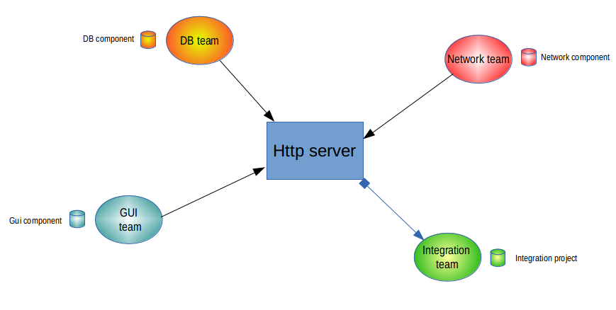

Remote libraries (also called HTTP models) are independent, identified and coherent parts of a larger model, made available on a network. The supported network protocol is http.
Remote libraries can contain any model, either complete including all annotations (tags, notes) or simplified limited to namespace and inheritance links, as is often the case for Model Components
Being libraries, remote libraries provide read-only model elements just like Model Components (local libraries). They allow developers to share models through a network. For example, several geographically distinct teams can work together by sharing models in the form of libraries.
Compared to model components, HTTP models are not explicitly versioned. However, as they are read directly from the network instead of being installed locally, they benefit from an almost real-time update should they be modified. More exactly, their contents are refreshed each time the project referencing them is opened. In addition, the Modelio project configurator provides an explicit Refresh command in its Libraries tab.
In a large scale multi-user development project, with several people working together at the same time on the same project, remote libraries are helpful because they allow each development team to progress in its own teamwork environment and according to its own schedule, without affecting the work of the other project participants.
In the following example, each team develops its own component and publishes it on a common HTTP server in order to share its work.
The integration team does not publish any models, but rather collects all the models to build the final application.

There is no universal answer to this question.
However, the following facts might be worth considering when you are making your choice.
Model components
HTTP libraries
From our experience, we recommend the use of Model Component libraries for stable components that are used by your project and which are external to your project, ie not developed in the project. For example, the JDK or other third-party software. If you plan to use Model Components for parts of your project, which might be a perfectly good idea in some projects, prepare a well-defined process for the management of these components: version delivery, version publication, synchronous deployment for the whole team and so on. On the other hand, we recommend the use of HTTP Libraries for your components in the projects. This way, different teams can stay up-to-date at the lowest possible cost, while still preserving a modular approach and avoiding the mortal syndrome of “anyone can modify anything”.